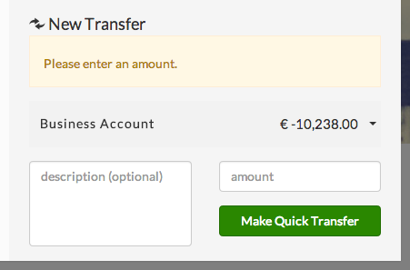
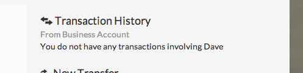

The Launchpad Addressbook widget is a very powerful widget with a lot of functionality. Built using AngularJS for basic widget architecture, and RequireJS for asynchronous module definition, the following pieces of functionality are core to the Addressbook widget:
Below is a detailed look at some of the Addressbooks more complex functionality:
The amount field is required and validated before a new transfer can be made. Below is a screenshot of what an invalid transfer looks like:

Typing part of a contacts name into the search field of the Addressbook widget will filter the contact list based on the input
This view, when looking at an individual contact, shows a list of recent activities that have occurred between this contact and the users default account. Below is a screenshot demonstrating this functionality:

This widget is fully responsive to different sized screens, and the below breakpoints provide the sizes in which the widget will change form:
The following is a list of preferences configurable through Portal Manager:
| Preference | Description |
|---|---|
| contactListDataSrc | The URL endpoint to retrieve the list of contacts for the user |
| contactDataSrc | The URL endpoint to retrieve an individual contact |
| contactDetailsDataSrc | URL endpoint to retrieve various details about the contact, including transaction history |
| messageSrc | URL endpoint to retrieve the different keywords used by the Addressbook widget |
The following is a table of pub/sub event which the Addressbook widget subscribes to, or publishes to
| Event | Type | Arguments | Description |
|---|---|---|---|
| launchpad.contacts.load | Subscribe | N/A | When this message is received, the widget will reload its contacts model |
| launchpad-retail.transactions.applyFilter | Publish | {contactName: contact.name, filters: { contact: contact.account}} |
Publishes an applyFilter event to any interested parties |
| launchpad-retail.paymentOrderInitiated | Publish | N/A | Published when a quick transfer is placed, opens the Review Transfers widget |
The following is a list of Launchpad Modules which are dependencies of the Addressbook widget: